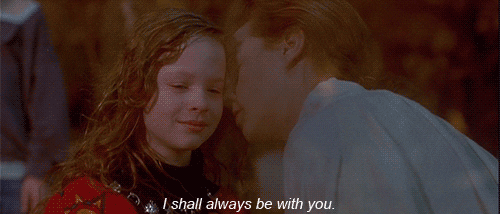
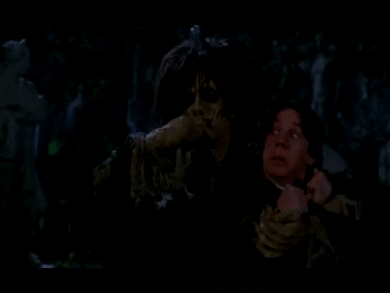

REVIEW
Jessica Silva August 14, 2020
Hocus Pocus is a movie that will never grow old in my opinion. I remember watching it as a child and being so enthralled the whole time that I made my parents replay it over and over again even when it wasn't October. I blame this movie for my love of Halloween and obsession with witches and all things spooky.
When I think of Hocus Pocus I can't help but think of crisp fall nights, trick or treating with friends, and the nostalgic smell of cheap plastic Halloween masks.
While watching this film you'll laugh at the corny jokes, you'll smile at the sweet innocence of it, and if you don't cry at the ending, well...then you're simply not human.

Is it a cheesy film? Oh of course. But that's what you get for an early 90's Disney movie! That's also what makes it such a classic, timeless film. Hocus Pocus perfectly captures the spirit of Halloween. This is a movie that brings back so many happy memories for me and one I will be sharing with my children in the future as well.
Trivia
- Sarah Jessica Parker, who played Sarah Sanderson, was shocked to discover that her 10th great-grandmother, Esther Elwell, was arrested in Salem, MA in the late 1600s for committing "sundry acts of witchcraft".
- During a 20th anniversary screening of the film, Doug Jones, who played Billy Butcherson, revealed that the moths that come out of his mouth during one scene were actually real. 
- The animatronic cat used to portray Binx would later be used in Sabrina the Teenage Witch in 1996.
- In 2018 on the Hocus Pocus 25th Anniversary Halloween Bash, Sarah Jessica Parker revealed that she actually ate a spider in one scene.